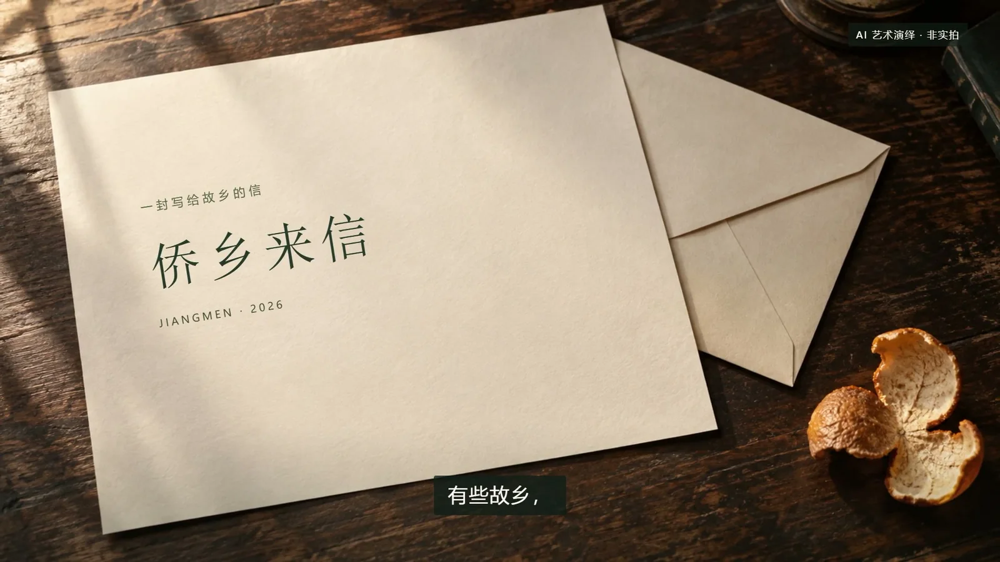

A SHORT INTRODUCTION / 作品导览
先读一封信，
再走进一座城。
用约 3 分钟认识《侨乡来信·江门》。先听、再读、动手写一句，最后为自己的旅程挑一站。
这是建议的体验顺序；阅读、创作与旅行规划，都可以按自己的节奏继续。


A SHORT INTRODUCTION / 作品导览
用约 3 分钟认识《侨乡来信·江门》。先听、再读、动手写一句，最后为自己的旅程挑一站。
这是建议的体验顺序；阅读、创作与旅行规划，都可以按自己的节奏继续。
